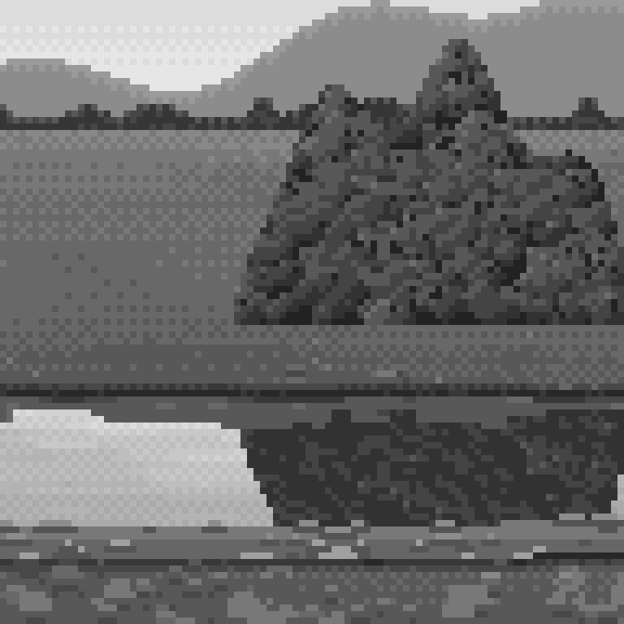
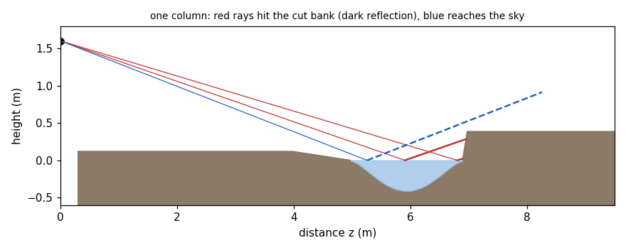
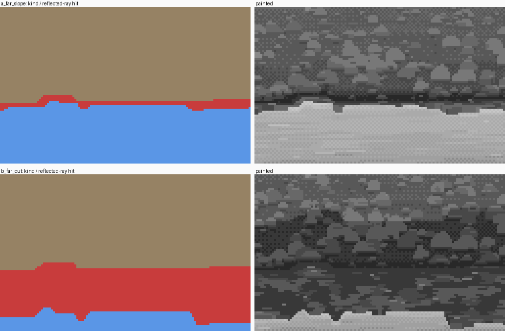
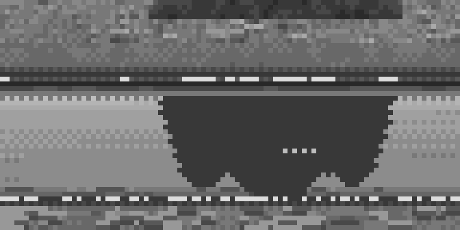
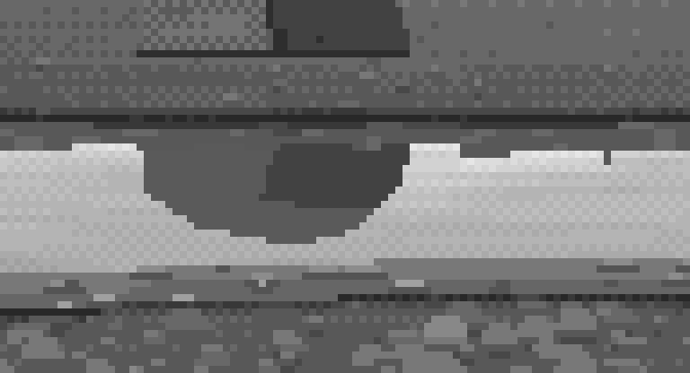

3. What the mirror sees: rays that stay in their column, and reflections that copy the painting
What it's for. Getting every reflection right by geometry, then keeping it painted. That covers the far bank's reflection (tall for a cut bank, a sliver for a sloping one), objects standing back from the water (a boulder, a willow) whose reflections are cut off by the bank, and clouds you can't see in the frame. The critic listed "reflection by copying the painted pixels plus the tone law, and cut vs sloping banks from the geometry" among the things ready to use.
Code: raycast in code/world.py; the reflection blocks of paint(), and paint_objects / mirror_objects in code/painter.py; tone_down in code/channel.py.

The willow and its reflection at 8×. The reflection is the willow's own painted pixels, mirrored and one step down.
Step 1. The world is a heightfield; the water is y = 0 wherever the ground is lower
My first stage-1 strip hand-coded the geometry row by row: this row is bank, these rows are water. That worked until the edges needed real shape. From stage 2 on, the world is a ground height y(x, z) in metres, with the water surface at y = 0 wherever the ground dips below it. StraightChannel builds a channel between two edges whose positions and bank heights wander in piecewise-constant runs of 0.3–1.2 m ("breathing"), with a far bank that is either sloping or cut:
if kind == 'slope':
run = self.far[2]
yf = np.clip(d / run, 0, 1) * hb # rises over `run` metres
else: # cut: a near-vertical face of 0.08 m run
yf = np.clip(d / 0.08, 0, 1) * hb
Step 2. Raycast one screen column at a time
With a pinhole camera and a small pitch, each screen column is a vertical plane through the eye. So a column is a 1-D problem: march the ground profile under that plane, and find where each row's ray first goes below the surface.
The useful fact: a reflected ray stays in its column. Mirroring in a horizontal plane only flips the ray's vertical component, so the reflected ray lies in the same vertical plane. Finding what a water pixel reflects means marching the same profile upward from the water point.
for c in range(W):
xz = cam.x_of(c + 0.5, zs)
yt = terrain.height(xz, zs) # ground height along this column
ys = np.maximum(yt, 0.0) # the surface seen from above
ray = cam.h - s[:, None] * zs[None, :] # H x nz ray heights
below = ray <= ys[None, :]
...
for r in wrows: # each water pixel in the column
z0 = zh[r]
g = s[r] # tan of the grazing angle
mask = zs > z0
rr = (zs[mask] - z0) * g # the reflected ray's height
hit = rr <= ys[mask]
hit &= ys[mask] > 0.004
if hit.any():
... # interpolate the crossing, as for direct hits
G['refl'][r, c] = 1
G['refl_z'][r, c] = zr; G['refl_y'][r, c] = yr
G['refl_row'][r, c] = cam.row_of(zr, yr) # WHERE that point is painted on screen

One column of the cut-bank cell in section (figs.py fig_column, from the real G-buffer). The two red view rays hit water whose reflected rays strike the cut bank's face: those pixels reflect the bank. The blue one reflects the sky.

For a sloping and a cut far bank: red is water whose reflected ray hits the bank, blue is water that mirrors the sky. A sloping bank reflects 1–3 rows; a cut bank reflects as tall as its face.
Two bugs here, and what they taught me:
- Stray white pixels at the far edge. The reflected rays of the last water rows "hit" ground at y ≈ 0.0003 m: the water's own margin, at the surface. The fix is the
> 0.004threshold. A hit has to be on something standing above the water. - Vertical stripes in a cut bank's reflection. I first took the reflected hit at the march sample itself, without interpolating. On a near-vertical face, neighbouring rows snapped to different samples and the reflection came out as a barcode. Reflected hits are now interpolated exactly like direct hits.
Step 3. Copy the painted pixel, then apply the tone law
This is the half that keeps it painted. Don't re-shade the reflection. Look up the pixel already painted at refl_row in the same column, and copy it, then compress its range (Ferrari's tone law, as the analysis student measured it: lights drop, darks hold or lift):
mg = wm & (G['refl'] == 1)
rr, cc = np.nonzero(mg)
src = np.clip(np.floor(G['refl_row'][rr, cc]).astype(int), 0, H - 1)
for k in range(4): # the source must be painted ground: step up if not
bad = kind[src, cc] != 1
src = np.where(bad, np.maximum(src - 1, 0), src)
out = cv[src, cc].copy()
for rname in ('grav', 'grass', 'earth'):
out = ch.tone_down(out, P.r(rname))
def tone_down(idx, ramp, lights=1, dark_up=True):
"""Ferrari's reflection law on one ramp: the top half drops `lights` steps, the darkest comes up."""
...
k2 = np.where(k >= n // 2, k - lights, k)
if dark_up:
k2 = np.where(k == 0, 1, k2)
On a heightfield, anything the mirror sees is also visible directly, so the pixel to copy always exists. Then treat the reflection as water, not as a picture:
- smear it sideways: hold each value over runs of 2–5 px, because reflections streak horizontally;
- cross it with short solid light runs of a water tint, the wind lines;
- step its lower edge: it runs 0–2 rows further down, in runs of 3–10 px.
My first stage-1 reflections were computed from physical values and quantized separately, and they came out as flat blobs:

nb057. The willow's reflection re-rendered from values: a flat block with a scalloped edge, and none of the willow in it.
Step 4. Objects standing back from the water: a billboard mirror about their own foot
A willow or a boulder standing on the bank is painted as a billboard: a painted sprite at its distance, depth-tested against the ground. Its reflection hangs from its own foot at water level, not from the shoreline. That's the classical rule, and the one amateurs miss most. A pixel at row r reflects to row 2·R0 − r, where R0 is the row of the object's foot projected to y = 0. It's written only onto water whose own reflected ray doesn't hit something nearer, so the bank's reflection hides the bottom of the object's:
def mirror_objects(cv, ol, G, cam, P, wm, rng):
"""a pixel at row r reflects to 2*R0 - r (R0: the object's foot at water level); only onto water
whose own reflection is sky or ground FARTHER than the object (nearer bank reflections occlude)."""
rs, cs = np.nonzero(ol['layer'] >= 0)
rm = np.floor(2 * ol['foot'][rs, cs] - rs - 0.5).astype(int)
...
ok = wm[rm, cs] & ~((G['refl'][rm, cs] == 1) & (G['refl_z'][rm, cs] < cam.f * cam.h / np.maximum(ol['foot'][rs, cs] - cam.hz, 1e-3) - 0.2))
...
out[b] = ch.tone_down(ch.tone_down(vals[b], P.r('bould')), P.r('bould'), dark_up=False)
out[~b] = ch.tone_down(vals[~b], P.r('wil'))
cv[rm, cs] = out
A convex solid (the boulder) drops two steps in its lights, because the mirror sees its shaded underside. Foliage drops one, and its darkest comes up one: the range compresses and the texture stays.

nb078. Before the billboard mirror. The boulder's reflection came to a point: a "heart", the critic called it. That's the most eye-catching wrong shape a strip can have.

After: a squat inverted dome, cut off at the top by the bank's own reflection.
Step 5. Look at what the mirror sees before you paint anything
study/s1_value_study.png was my first stage-1 image: just the physical values, with no painting at all.

nb049. The value study. It showed me the three geometric facts I used from then on:
- the strip mirrors sky that is above the frame (so put clouds up there; how-to 2);
- a sloping bank reflects only a sliver; only a cut bank reflects as tall as it stands;
- the brightest water is right under the reflected bank: the sheen.
Where it still falls short. The objects are billboards, so a big near boulder's reflection won't show its underside correctly. At these sizes it doesn't matter. And the reflection's smear is the same everywhere; wind should stretch reflections vertically before it breaks them, which I never built.